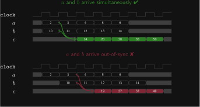
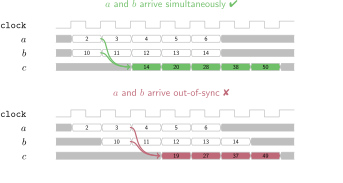
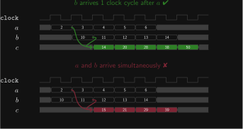
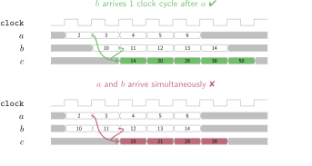

Input Stream Delay Annotations#
Added in version 2.3.0.
Sirop supports “delay annotations” that express the relative arrival times of the inputs to the VHDL entity.
First, consider the following simple program without delay annotations.
Given streams a = [a0, a1, a2, ...]s and b = [b0, b1, b2, ...]s, it returns [(a0*a0 + b0), (a1*a1 + b1), (a2*a2 + b2), ...]s.
Since the input streams do not have delay annotations, the Sirop compiler assumes a and b will arrive at the same time.
const N: u32 = 5
accelerator[no_handshake, out_name=c, head(a)=undefined, head(b)=undefined]
// Neither 'a' nor 'b' has a delay annotation, so assume delay 0 for both.
// In other words, the two input streams must arrive simultaneously.
foo = (a: Stm[u16, N]) => (b: Stm[u16, N]) =>
a
.StmMap(x => x * x)
.StmMap2(b, a_squared => b => a_squared + b)
assert {
a = [ 2:u16, 3:u16, 4:u16, 5:u16, 6:u16]s,
b = [10:u16, 11:u16, 12:u16, 13:u16, 14:u16]s
}
yields [14:u16, 20:u16, 28:u16, 38:u16, 50:u16]s
The behaviour of this program is illustrated in the following timing diagram.




However, suppose we want stream b to arrive one cycle later than stream a.
This can be expressed as follows.
const N: u32 = 5
accelerator[no_handshake, out_name=c, head(a)=undefined, head(b)=undefined]
// Since there is no delay annotation for input 'a', it defaults to zero.
// Therefore, input 'b' must arrive one clock cycle later than 'a'.
foo = (a: Stm[u16, N]) => (b: Stm[u16, N] @ 1) =>
// ^^^
// NEW
a
.StmMap(x => x * x)
.StmMap2(b, a_squared => b => a_squared + b)
assert {
a = [ 2:u16, 3:u16, 4:u16, 5:u16, 6:u16]s,
b = [undefined:u16]s ++ [10:u16, 11:u16, 12:u16, 13:u16, 14:u16]s
// ^^^^^^^^^^^^^^^^
// NEW
}
yields [14:u16, 20:u16, 28:u16, 38:u16, 50:u16]s
This program is described by the following timing diagram.




Note
Only the relative values of the delay annotations matter.
In the example above, annotating a with @ 100 and b with @ 101 would have had the same effect as just annotating b with @ 1.
Effect on Resource Usage#
Carefully choosing the delay annotations can lower ALM usage.


Figure 1 VHDL generated from the example program with and without delay annotations.#
In the original program, a passes through one pipeline stage (StmMap(x => x * x)) before reaching the adder.
By contrast, b feeds directly into the adder.
Therefore, the Sirop compiler must add a register to balance the latency (see latency matching).
This is the blue register on the left-hand side of figure 1.
In the program with a delay annotation, the programmer promises that b will already be delayed by one clock cycle at the input.
Therefore, the Sirop compiler does not need to add any extra registers.
The result is shown on the right-hand side of figure 1.